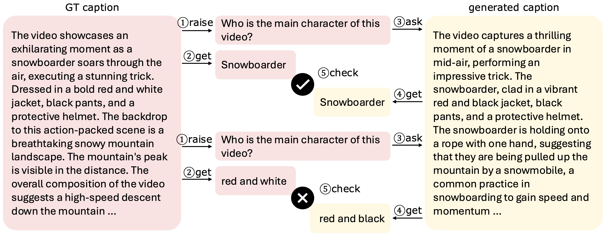
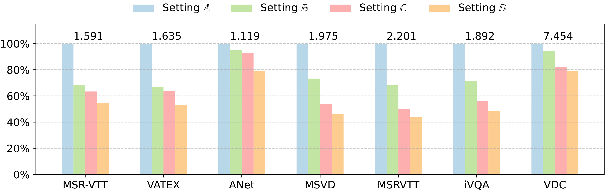

🤩 Welcome to the Video-MMLU lecture hall! Is your model ready to be tested?
Class is in session! Submit your scores to see if your models make the honor roll. Professor is waiting...
Please remember to report your frame rate and tokens per frame with each submission.
Email us at or .
We present a quantitative comparison of existing state-of-the-art large multimodal models across various multi-discipline lecture understanding tasks in Video-MMLU.
# F stands for the frame sampling number of the input video, and TPF represents the visual tokens per frame.
The average key frame number in Video-MMLU is 26.
Video-MMLU Example
"MVPs: Wordless Animations of Five Classic Proofs without Words" presents an intricate journey through mathematical concepts using purely visual demonstrations. The video opens with a stark black background featuring the title and subtitle, accompanied by a subscribe button and thumbs-up icon, setting the stage for an engaging educational experience.
The presentation begins with a foundational exploration of geometric series, displaying the mathematical expression \( \frac{1}{2} + \frac{1}{4} + \frac{1}{8} + \ldots + \frac{1}{2^k} + \ldots \). This infinite series is beautifully illustrated through a square divided into colored sections, where the left half is colored in deep purple representing \( \frac{1}{2} \), while the remaining space is partitioned into increasingly smaller sections in teal and purple, labeled with fractions \( \frac{1}{4} \), \( \frac{1}{8} \), \( \frac{1}{16} \), and \( \frac{1}{32} \). The visual demonstrates how these fractions collectively sum to 1, with each subsequent fraction representing half of the previous one.
The video then transitions to exploring the sum of the first n natural numbers, presenting the equation \( 1 + 2 + 3 + \ldots + n = \frac{n(n + 1)}{2} \). This concept is visualized through a triangular arrangement of light blue squares, forming a right triangle pattern where each row contains one more square than the row above it. The dimensions are carefully labeled with n, demonstrating the relationship between the height and base of the triangle.
A particularly elegant proof involves the difference of squares formula, \( a^2 - b^2 = (a - b)(a + b) \). This is demonstrated through multiple visual representations, including a large purple square representing \( a^2 \) and a smaller square representing \( b^2 \), with the difference illustrated through L-shaped sections and rectangular divisions. The dimensions are clearly labeled with a and b, showing how the factored form relates to the geometric representation.
The Pythagorean theorem receives special attention through a series of illustrations, including a light blue right triangle with sides labeled a, b, and c, accompanied by the classic equation \( c^2 = a^2 + b^2 \). This is further elaborated through a square grid divided into four sections, with colored squares in purple and light blue demonstrating the relationship between the areas of squares formed by the triangle's sides.
The presentation also explores the sum of odd numbers through the equation \( 1 + 3 + 5 + ... + (2n - 3) + (2n - 1) = n^2 \), using a grid of green and light blue squares to demonstrate how odd numbers sum to perfect squares. Each step in the progression is carefully illustrated through staircase-like arrangements of colored squares.
Throughout the video, minimalist black silhouettes of standing figures appear at key transitions, suggesting a lecture-style presentation. A simple light bulb illustration also appears, symbolizing moments of insight or understanding. The presentation concludes by attributing these proofs to various historical figures, including ancient Greeks, Chinese mathematicians, Nicomachus of Gerasa, and Warren Page.
Each proof is meticulously constructed using a consistent color palette of purples, blues, and teals against a black background, ensuring maximum visibility and clarity. The visual elements are carefully labeled with appropriate mathematical notation, creating a seamless blend of geometric and algebraic representations that effectively communicate complex mathematical concepts without the need for words.
The educational video on osmosis and tonicity, produced by Ricochet Science, presents a comprehensive exploration of these fundamental biological processes through clear visual elements and detailed explanations.
The presentation opens with a bold black title against a white background, immediately followed by the distinctive Ricochet Science logo featuring a stylized laboratory flask with rising bubbles in black and teal, establishing its educational context.
At its core, the video establishes that osmosis represents the diffusion of water across a semipermeable membrane, while tonicity refers to the relative solute concentration between two environments separated by such a membrane.
This foundational concept is illustrated through a detailed central diagram showing a semipermeable membrane dividing two distinct environments.
The left side, labeled "Hypotonic Environment," contains a solution of 25% sodium chloride and 75% water, while the right side, labeled "Hypertonic Environment," shows 75% sodium chloride and 25% water.
The diagram uses color-coded spheres - blue for water molecules, purple for sodium ions (Na⁺), and orange for chloride ions (Cl⁻) - to clearly demonstrate molecular composition.
Yellow arrows indicate the fundamental principle that water molecules move from the hypotonic to the hypertonic environment, always flowing toward areas of higher solute concentration.
The presentation then explores three critical scenarios using beakers containing red blood cells in different solutions.
In the first scenario, red blood cells are suspended in pure water (a hypotonic solution).
The video explains that the cells' internal environment is hypertonic relative to the surrounding water, causing water to flow into the cells through osmosis.
This influx of water can potentially lead to cell lysis, or bursting, if sufficient water enters the cells.
The second scenario demonstrates the opposite condition, where red blood cells are placed in a hypertonic sodium chloride solution (represented by blue liquid).
This environment causes crenation, or cell shrinkage, as water moves out of the cells toward the more concentrated external solution.
The third scenario illustrates isotonic conditions, where the solution's tonicity matches that of the cells, resulting in no net water movement and maintaining cellular stability.
Throughout the presentation, these concepts are reinforced against a gradient purple background that enhances visibility and comprehension.
The semipermeable membrane is consistently depicted as a selective barrier, allowing water passage while restricting other substances.
This selective permeability is crucial for understanding cellular homeostasis and various physiological processes, including kidney function and the effects of diseases like diabetes, which the video briefly mentions as practical applications of these principles.
The comprehensive visual journey concludes with the Ricochet Science logo and copyright information from Ricochet Creative Productions, LLC (2013), maintaining its professional educational approach throughout.
The presentation effectively combines theoretical concepts with practical examples, helping viewers understand how osmosis and tonicity influence cellular behavior in various environmental conditions, making complex biological processes accessible to learners at different levels.
"MVPs: Wordless Animations of Five Classic Proofs without Words" presents an intricate journey through mathematical concepts using purely visual demonstrations. The video opens with a stark black background featuring the title and subtitle, accompanied by a subscribe button and thumbs-up icon, setting the stage for an engaging educational experience.
The presentation begins with a foundational exploration of geometric series, displaying the mathematical expression \( \frac{1}{2} + \frac{1}{4} + \frac{1}{8} + \ldots + \frac{1}{2^k} + \ldots \). This infinite series is beautifully illustrated through a square divided into colored sections, where the left half is colored in deep purple representing \( \frac{1}{2} \), while the remaining space is partitioned into increasingly smaller sections in teal and purple, labeled with fractions \( \frac{1}{4} \), \( \frac{1}{8} \), \( \frac{1}{16} \), and \( \frac{1}{32} \). The visual demonstrates how these fractions collectively sum to 1, with each subsequent fraction representing half of the previous one.
The video then transitions to exploring the sum of the first n natural numbers, presenting the equation \( 1 + 2 + 3 + \ldots + n = \frac{n(n + 1)}{2} \). This concept is visualized through a triangular arrangement of light blue squares, forming a right triangle pattern where each row contains one more square than the row above it. The dimensions are carefully labeled with n, demonstrating the relationship between the height and base of the triangle.
A particularly elegant proof involves the difference of squares formula, \( a^2 - b^2 = (a - b)(a + b) \). This is demonstrated through multiple visual representations, including a large purple square representing \( a^2 \) and a smaller square representing \( b^2 \), with the difference illustrated through L-shaped sections and rectangular divisions. The dimensions are clearly labeled with a and b, showing how the factored form relates to the geometric representation.
The Pythagorean theorem receives special attention through a series of illustrations, including a light blue right triangle with sides labeled a, b, and c, accompanied by the classic equation \( c^2 = a^2 + b^2 \). This is further elaborated through a square grid divided into four sections, with colored squares in purple and light blue demonstrating the relationship between the areas of squares formed by the triangle's sides.
The presentation also explores the sum of odd numbers through the equation \( 1 + 3 + 5 + ... + (2n - 3) + (2n - 1) = n^2 \), using a grid of green and light blue squares to demonstrate how odd numbers sum to perfect squares. Each step in the progression is carefully illustrated through staircase-like arrangements of colored squares.
Throughout the video, minimalist black silhouettes of standing figures appear at key transitions, suggesting a lecture-style presentation. A simple light bulb illustration also appears, symbolizing moments of insight or understanding. The presentation concludes by attributing these proofs to various historical figures, including ancient Greeks, Chinese mathematicians, Nicomachus of Gerasa, and Warren Page.
Each proof is meticulously constructed using a consistent color palette of purples, blues, and teals against a black background, ensuring maximum visibility and clarity. The visual elements are carefully labeled with appropriate mathematical notation, creating a seamless blend of geometric and algebraic representations that effectively communicate complex mathematical concepts without the need for words.
The video presents a sophisticated mathematical exploration of the expression √101 - √99, demonstrating an elegant approach to approximating the difference between two closely spaced square roots. Against a clean white background, a friendly cartoon character wearing glasses and a graduation cap serves as a mathematical guide, establishing the video's educational tone from the outset.
The presentation begins with a crucial insight into the rationalization process, emphasizing that this technique is essential for such expressions involving the difference of square roots. The video methodically demonstrates the rationalization by multiplying both numerator and denominator by (√101 + √99), a strategic step that transforms the expression into (√101 - √99)(√101 + √99) / (√101 + √99). This manipulation leverages the fundamental difference of squares formula, (a + b)(a - b) = a² - b², which appears highlighted in red to underscore its pivotal role. The numerator elegantly simplifies to 101 - 99 = 2, yielding the more manageable form 2/(√101 + √99).
The exploration then delves into a sophisticated analysis of bounds and properties. The video introduces the variable x to represent √101 + √99, and through careful algebraic manipulation, demonstrates that x² = 200 + 2√(100² - 1). This leads to a critical insight: since 100² - 1 represents numbers very close to 100², the expression can be bounded between 398 and 400. Through rigorous mathematical reasoning, the video establishes that x must lie between 19 and 20, as x² < 400 (20² = 400) and x² > 361 (19² = 361).
The presentation further enriches understanding by showing how (√101 + √99)² expands to 101 + 99 + 2√(101 × 99), demonstrating the interconnection between different algebraic forms. This expansion provides additional verification of the bounds previously established. The analysis culminates in proving that 2/x falls within the precise range of 0.1 < 2/x < 0.105, leading to the approximate value of √101 - √99 ≈ 0.1025.
Throughout the demonstration, visual aids enhance comprehension, with red arrows and color-coded inequalities guiding viewers through the mathematical relationships. A playful gray cat makes an endearing appearance, raising its paw in a friendly gesture, providing a moment of levity amidst the technical content. The video maintains its engaging approach while systematically building upon each concept, ensuring viewers grasp both the mathematical mechanics and the underlying reasoning.
The presentation concludes with a visually appealing closing frame, featuring a red "SUBSCRIBE" button in the top left corner alongside a notification bell icon. The word "thank you" appears in artistic purple and red lettering, incorporating a heart symbol, while a cartoonish blue hand makes an appreciative gesture against the white background. This thoughtful conclusion maintains the video's welcoming tone while reinforcing its educational value.
The entire presentation successfully combines rigorous mathematical analysis with accessible visual elements, making complex algebraic concepts more approachable while maintaining mathematical precision throughout the step-by-step exploration of transforming and bounding the expression √101 - √99.
In this detailed mathematical video presentation, we observe a young man seated in front of a light-colored wall with windows, wearing a distinctive plaid shirt and baseball cap throughout. He engages enthusiastically with his audience while explaining an intricate geometric problem involving three circles and their relationships within a rectangular boundary. His recent haircut, which he playfully mentions at the end, adds a personal touch to his professional demeanor.
The main problem, prominently displayed with the heading "Can you solve it?" and accompanied by a star icon, features three circles with diameters labeled as 3, 4, and 6 units. These circles are arranged within a rectangular framework, with the largest circle (diameter 6) determining the height of the rectangle. The problem's elegant setup demonstrates how these circles are tangent to each other and the rectangle's boundaries, creating an interesting geometric relationship that requires careful analysis to solve.
The instructor methodically develops the solution by first breaking down the unknown distance into two components, labeled as x and y. This decomposition proves crucial for solving the problem, as it allows for the application of the Pythagorean theorem to two separate right triangles. The circles' radii (1.5, 2, and 3 units respectively) play a fundamental role in establishing these relationships.
Throughout the video, the instructor develops the solution using several complementary diagrams. One diagram shows the circles with additional markings, including a fraction (2/6) and various dimensions labeled as 1.5, 3, 5, and 2. The problem is further elaborated using color-coding, with purple and green sections highlighting different parts of the solution path. Blue dashed lines indicate radii and measurements between key points, helping viewers follow the geometric reasoning.
The solution process involves multiple geometric and algebraic steps, beginning with the analysis of the two larger circles. A right triangle is introduced with sides labeled 1 and 5, leading to the Pythagorean theorem equation: 1² + y² = 5². This is followed by the simplification 1 + y² = 25, ultimately yielding y = 2√6. Another key calculation involves a right triangle with sides of 2.5 and 3.5 units, utilized to determine the value of x through the equation 2.5² + x² = 3.5², which leads to x = √6.
As the solution progresses, various measurements are revealed and analyzed, including segments marked as √6 and 2√6. The instructor carefully explains the relationships between these measurements, using vertical and horizontal lines to demonstrate connections. Green lines are employed to highlight specific measurements, particularly when dealing with the length marked as 5 units and the variable y.
The mathematical working shows particular attention to detail in handling square roots and simplification. The process of simplifying √24 into 2√6 is clearly explained, demonstrating important algebraic techniques. The final solution elegantly combines the two components (x + y) to arrive at 3√6, which represents the total distance in question.
The video culminates with the complete solution, showing how all the geometric relationships and measurements come together. The final diagrams display both the initial problem setup and the solved configuration, with all relevant measurements clearly labeled, including the conclusive proof that the unknown length equals 3√6. The instructor's animated and friendly demeanor helps maintain viewer engagement throughout this complex mathematical journey, all while staying in his consistent position in front of the light-colored wall with windows visible in the background. His step-by-step approach, combined with clear visual aids and enthusiastic presentation style, makes this challenging geometric problem accessible and engaging for viewers.
"THIS IS MF DOOM" presents an intricate mathematical exploration set against a stark black background, where complex mathematical concepts are woven together with cultural references to the legendary rapper and producer MF DOOM. Throughout the presentation, a bold title consistently anchors each frame, serving as a reminder of the unique intersection between mathematics and musical artistry.
The video begins by introducing a fundamental mathematical series, presenting the expression (1 - p) + p(1 - p) + p²(1 - p) + p³(1 - p) + ..., which equals 1. This foundational series emerges from a recursive process of repeatedly dividing the rightmost piece into fixed proportions, demonstrating how mathematical patterns can arise from simple iterative procedures. The related geometric series 1 + p + p² + p³ + ... simplifies to 1/(1 - p), a crucial result that underlies much of the subsequent analysis. The presentation carefully explains that this series "makes sense for almost any value of p," though the initial derivation only applies for values between 0 and 1.
A significant portion of the video focuses on a probability distribution displayed on a number line ranging from 0 to 1. The line features crucial expressions involving the variable p and its complement (1 - p), with specific attention paid to terms like (1 - p), p(1 - p), p²(1 - p), p³(1 - p), and p⁴. Arrows strategically point to these expressions, emphasizing their relationships and significance within the probability framework. This visual representation helps illustrate how the series components distribute across the unit interval.
The presentation then delves into alternating series, examining the behavior of (-1)⁰ + (-1)¹ + (-1)² + (-1)³ + ..., which equals 1/(1 - (-1)). This leads to the fascinating result that the alternating series 1 - 1 + 1 - 1 + ... equals ½, a result that, while seemingly counterintuitive, emerges naturally from the established framework. Further mathematical exploration introduces the geometric series 2⁰ + 2¹ + 2² + 2³ + ..., which equals 1/(1-2), demonstrating how 1 + 2 + 4 + 8 + ... surprisingly equals -1. These results showcase how mathematical formalism can lead to unexpected yet consistent conclusions when extended beyond their original context.
The video maintains its mathematical rigor while illustrating these concepts through various representations. Each frame builds upon the previous, creating a cohesive narrative that connects probability theory, infinite series, and geometric progressions. The representation of these concepts includes both algebraic expressions and visual elements on the number line, making complex mathematical ideas more accessible.
Throughout the presentation, special attention is paid to the variable p and its various powers and combinations with (1 - p), suggesting a deeper connection between probability theory and the artistic themes associated with MF DOOM. The consistent use of the black background with white text creates a stark contrast that emphasizes the mathematical notation while maintaining a stylistic connection to the artist's aesthetic.
The video concludes by reinforcing these mathematical relationships, particularly focusing on the probability distribution and infinite series concepts. The final frames reiterate the key expressions and their relationships, ensuring viewers grasp both the individual components and their interconnections within the larger mathematical framework, all while maintaining the thematic connection to MF DOOM's artistic legacy. The presentation demonstrates how mathematical formulas can transcend their original derivation contexts to reveal broader patterns and relationships in unexpected domains.
Abstract
Recent advancements in language multimodal models (LMMs) for video have demonstrated their potential for understanding video content, yet the task of comprehending multi-discipline lectures remains largely unexplored.
We introduce Video-MMLU, a massive benchmark designed to evaluate the capabilities of LMMs in understanding Multi-Discipline Lectures.
We evaluate over 90 open-source and proprietary models, ranging from 0.5B to 40B parameters.
Our results highlight the limitations of current models in addressing the cognitive challenges presented by these lectures, especially in tasks requiring both perception and reasoning.
Additionally, we explore how the number of visual tokens and the large language models influence performance, offering insights into the interplay between multimodal perception and reasoning in lecture comprehension.
AuroraCap: A Efficient and Performant Video Detailed Captioner
Architecture
LLaVA.
To effectively leverage the capabilities of both the pre-trained LLM and visual model, LLaVA adapt a simple multilayer perceptron (MLP) projection layer to connect each patch tokens of image features into the word embedding space.
Token merging.
To increase the throughput of existing ViT models, Token Merging is proposed to gradually combines similar tokens in a transformer to reduce the number of tokens passing through ViT models.
Token Merging has been proven to be effective on image and video classification tasks even without the need for training.
We conduct frame-wise token merging in AuroraCap, where the feature is extracted by CLIP ViT-H model.
We show token merging visualization examples from COCO, VG, SA-1B as follows:
Token merging visualization. From left to right, the number of visual tokens representing the images are 490, 154, 18, and 6.
Training Recipe
We use over 20 million high-quality image/video-text pairs to train AuroraCap in three stages. The training datasets are released at HuggingFace.
Pretraining stage.
We first align visual features with the word embedding space of LLMs.
To achieve this, we freeze the pretrained ViT and LLM, training solely the vision-language connector.
Vision stage.
We unfreeze the pretrained ViT while freezing the LLM during vision stage and train with the public data among various computer vision tasks to get better generalization.
Language stage.
Finally, we conduct end-to-end training, which means all the components are trainable, with the most high-quality public data during language stage.
VDC: A New Video Detailed Captioning Benchmark
Benchmark Collection and Processing
Video collection and processing.
We building VDC upon Panda-70M, Ego4D, Mixkit, Pixabay, and Pexels.
We first split the video into clips and apply dense frame extraction, then manually replacing blurry frames with adjacent clear ones.
Table 1 : Benchmark comparison for video captioning task. Ave. Length indicates the average number of words per caption.
Dataset
Theme
# Video
# Clip
# Caption
# Word
# Vocab.
Ave. Length
MSVD
Open
1,970
1,970
70,028
607,339
13,010
8.67
MSR-VTT
Open
7,180
10,000
200,000
1,856,523
29,316
9.28
ActivityNet
Open
20,000
100,000
100,000
1,340,000
15,564
13.40
S-MiT
Open
515,912
515,912
515,912
5,618,064
50,570
10.89
M-VAD
Movie
92
48,986
55,905
519,933
18,269
9.30
MPII-MD
Movie
94
68,337
68,375
653,467
24,549
9.56
Youcook2
Cooking
2,000
15,400
15,400
121,418
2,583
7.88
Charades
Human
9,848
10,000
27,380
607,339
13,000
22.18
VATEX
Open
41,300
41,300
413,000
4,994,768
44,103
12.09
VDC (ours)
Open
1,027
1,027
1,027
515,441
20,419
500.91
Structured detailed captions construction pipeline.
We develop a structured detailed captions construction pipeline to generate extra detailed descriptions from various perspectives, significantly extending the length and enhancing the richness compared to previous benchmarks.
The structured detailed captions includes camera, short, background, main object, and detailed captions.
Camera caption.
Describe the camera work in detail, including shot types, angles, movements, transitions, and any special effects used to enhance the video.
Short caption.
Summarize the video in one detailed sentence, capturing key actions and the overall mood.
Background caption.
Provide a detailed description of the background, including objects, location, weather, time, and any dynamic elements.
Main Object caption.
Give a thorough description of the main subject's actions, attributes, interactions, and movements throughout the video frames.
Detailed caption.
Generate a detailed, vivid caption for the video, covering all categories, ensuring it's engaging, informative, and rich enough for AI to recreate the video content.
To generate detailed, fine-grained, and accurate captions, we leverage GPT-4o to produce video descriptions.
We design a hierarchical prompt strategy to efficiently obtain accurate structured captions and detailed captions in two conversation rounds: (1) Structured Captions Generation and (2) Detailed Captions Integration.
Distribution of the video length and structured caption length in VDC.
VDCscore: Evaluating Detailed Captions with LLMs
We introduce VDCscore, a novel quantitative metric that utilizes LLMs to evaluate the similarity between predicted and ground-truth detailed captions through a divide-and-conquer approach.
The core idea of VDCscore is to decompose long detailed captions into multiple short question-answering pairs, avergae the evaluation of each pair as the final result.

VDCscore evaluation pipeline.
Evaluation
Benchmarking video detailed captioning.
AuroraCap achieves superior performance in video detailed captioning while utilizing significantly fewer visual tokens than other models, fully highlighting the efficiency of AuroraCap.
Comparison between various models with different number of visual tokens input on VDC.
Ablation Study
As a core training and inference strategy of AuroraCap, token merging plays a significant role in reducing the number of visual tokens.
We further study how the video detailed captioning capability is influenced by token merge ratio.
Visualization of token merging ratio on various image and video understanding tasks.
The solid line indicates the average performance across various tasks, and the shaded area represents performance variability.
We define the performance percentage as the proportion between the highest and lowest values on the entire performance curve.
We highlight the token merging ratio when achieving 90% and 80% performance with the dash line and filled area.
We found that token merging significantly reduces the number of tokens while maintaining minimal performance drop, and even showing improvement in some tasks.
Ablation study on token merging ratio on various image and video understanding tasks.
To assess the inference speed, we utilize the inference time per video question-answering pair in seconds (TPV) as an evaluative metric.
Figure below indicates the minimum TPV achievable in our settings including with or without token merging and SGLang across seven video understanding datasets.
Reducing the visual tokens and using SGLang result in excellent inference times per video question-answering pair while all the datasets with short video and question inputs.

Comparison between different inference settings:
A: Rvtk = 1.0, without SGLang,
B: Rvtk = 0.1, without SGLang,
C: Rvtk = 1.0, with SGLang,
D: Rvtk = 0.1, with SGLang.
The number indicates the maximum inference time in seconds for each benchmark.
Our Related Work
MovieChat: From Dense Token to Sparse Memory for Long Video Understanding
@article{auroracap,
title={AuroraCap: Efficient, Performant Video Detailed Captioning and a New Benchmark},
author={Wenhao Chai, Enxin Song, Yilun Du, Chenlin Meng, Vashisht Madhavan, Omer Bar-Tal, Jeng-Neng Hwang, Saining Xie, Christopher D. Manning},
year={2024},
journal={arXiv preprint arXiv:2410.03051},
}